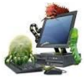
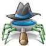
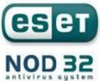

الوحدة 5: حماية الحاسوب
المجال الأول: التعامل مع بيئة الحاسوب
المدة الزمنية: 01 ساعة
حماية الحاسوب
الحاسوب جهاز ذو أهمية بالغة في حياتنا وهو كثير الاستعمال، لذا فهو معرض لخطر الأعطاب والأعطال سواء في أجزائه المادية أو في أمن المعلومات والبرمجيات. لذا فحمايته ووقايته من هذه الأخطار عملية مهمة للإبقاء عليه سليما وعمليا لمدة أطول.
1 أمن المعلومات والبرمجيات
المعلومات والبرمجيات هي الأكثر عرضة لمخاطر الإتلاف والقرصنة والاختراقات، وتتم بواسطة برامج خاصة تدخل للحاسوب عن طريق الاتصال بالإنترنت أو استعمال وحدات تخزين خارجية (ذاكرة وامضة، قرص ...)، ومن بين هذه البرامج:
2 البرامج الخطيرة
هي البرامج التي تسمح لأشخاص بالدخول عبر شبكة الإنترنت إلى حاسوبك بدون إذن بهدف التجسس أو سرقة المعلومات والبيانات أو التخريب، حيث تكون لها القدرة على نقل، حذف أو إضافة ملفات أو برامج، كما يمكنها إصدار أوامر كالطباعة أو التصوير وإرسال رسائل.
3 الاختراق (Hacking)
اختراق حاسوب يعني الدخول إليه بغض النظر عن الأضرار التي قد يحدثها. أما عندما يقوم بحذف ملف أو تشغيل آخر أو جلب ملف جديد فهو مخرب بالإنجليزية (Cracker). لا يستطيع الهاكر الدخول إلى جهازك إلا مع وجود ملف يسمى: patch أو trojan.
4 برامج التجسس (Spyware)



تثبت خلسة على الأجهزة للتجسس على المستخدمين أو للسيطرة جزئيا على الحاسوب الشخصي، فهي تهدف إلى التعرف على محتويات الحاسوب. ويمكن لهذه البرامج أن تسيطر على الحاسوب وتتحكم فيه وتقوم بعدة مهام، مثل: إضافة برامج، سرقة بيانات وأرقام حسابات، كلمة المرور أو أرقام بطاقات الائتمان.
5 الفيروس (Le Virus)

عبارة عن برنامج صمم عمدا من طرف مبرمجين محترفين ليصل إلى الحاسوب بدون معرفة صاحبه بغرض إحداث أضرار بمكونات الحاسوب المادية، وحذف وتغيير أو تخريب الملفات والبرامج، مما يؤدي إلى تغيير طريقة عمل الحاسوب، وفي بعض الأحيان يصل الأمر إلى تعطيل الحاسوب كلية. سمي بهذا الاسم لتشابه آلية عمله مع تلك الكائنات الحية المتطفلة.
1 خصائص الفيروس
- القدرة على التخفي عن طريق الارتباط ببرامج أخرى، ويبدأ العمل بمجرد تشغيل هذا البرنامج.
- يتواجد في أماكن استراتيجية كالذاكرة، ويصيب أي ملف يوجد بها.
- سرعة التكاثر والانتشار والانتقال بالعدوى.
- برنامج قادر على التناسخ والانتشار.
- لا يمكن أن تنشأ الفيروسات من ذاتها.
- يمكن أن تنتقل من حاسوب مصاب لآخر سليم أو عن طريق الإنترنت.
2 أعراض الإصابة
- تكرار رسائل الخطأ في أكثر من برنامج.
- ظهور رسالة تعذر الحفظ لعدم وجود مساحة كافية على الذاكرة أو القرص.
- تكرار اختفاء بعض الملفات التنفيذية.
- بطء شديد في بدء تشغيل الجهاز (إقلاع).
- بطء تنفيذ بعض التطبيقات.
- رفض بعض التطبيقات التنفيذ.
- تحويل الملفات والبرامج إلى اختصارات لا تفتح ولا تنفذ ...
3 أضرار الفيروس
- استهلاك مساحات تخزين عالية.
- استغلال جزء كبير من ذاكرة الكمبيوتر.
- التعدي على حقوق الملكية الفكرية بالتعديل دون موافقة من مالكي البرامج أو الملفات.
- تجبر على تشغيل برمجيات مضاد الفيروسات مما يشكل عبئا على المستخدم.
- حذف، تعديل أو تخريب الملفات والمجلدات.

4 الوقاية من الفيروسات:
للوقاية من الفيروسات يتطلب الأمر:
- تفعيل برنامج الجدار الناري.
- تزويد الحاسوب ببرامج للكشف عن الفيروسات تسمى مضاد الفيروسات Antivirus وتحديثها بانتظام.
- تزويد الحاسوب ببرنامج مراقبة ذاكرة الفلاش USB Guard.
- إجراء الفحص على البرامج المحملة من الإنترنت قبل تشغيلها.
- لا تشغل أي برنامج أو ملف لا تعرفه.
- الحذر من رسائل البريد الإلكتروني غير معروفة المصدر وفحصها قبل الإقدام على فتحها.
- لا تقم بتنزيل أو تحميل برامج من مواقع غير شرعية أو غير مضمونة، ولا تتبادل أي ملفات أو برامج مع أشخاص غرباء أو غير موثوق بهم.
- الكشف الدوري على جميع الأقراص الصلبة المثبتة باستخدام برنامج مضاد الفيروسات.
- عدم استخدام أي ذاكرات ثانوية إلا بعد الكشف عليها بمضاد الفيروسات.
- القيام بنسخ البيانات بشكل دوري على أقراص خارجية.
5 مضاد الفيروسات Antivirus
هي البرامج التي تقوم بحماية الحاسوب من هجمات الفيروسات وبقية البرامج الخبيثة التي تشكل تهديدا على المعلومات والملفات، وتستطيع أن تمنعها من الدخول كما تعمل على اكتشافها وإزالتها أو تعطيلها.
أمثلة عن بعض أنواع مضادات الفيروسات: